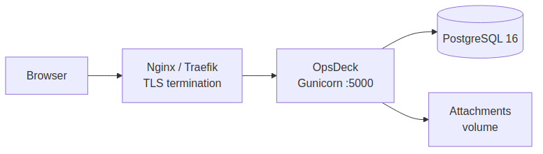

Docker Compose Deployment¶
Production-grade deployment using Docker Compose with PostgreSQL, persistent storage, and health checks.
Prerequisites¶
- Docker Engine 24+
- Docker Compose v2
docker-compose.yml¶
The repository includes a docker-compose.yml configured for development (debug mode, demo data, no healthcheck on the web service). For production, use the following as a starting point:

services:
web:
build:
context: .
ports:
- "5000:5000"
volumes:
- ./data/attachments:/app/data/attachments
environment:
- DATABASE_URL=postgresql://opsdeck:${DB_PASSWORD}@db:5432/opsdeck
- SECRET_KEY=${SECRET_KEY}
- FLASK_DEBUG=0
- DEFAULT_ADMIN_EMAIL=${ADMIN_EMAIL:-admin@example.com}
- DEFAULT_ADMIN_INITIAL_PASSWORD=${ADMIN_PASSWORD:-admin123}
env_file:
- .env
depends_on:
db:
condition: service_healthy
healthcheck:
test: ["CMD", "curl", "-f", "http://localhost:5000/health"]
interval: 30s
timeout: 10s
retries: 3
start_period: 40s
restart: unless-stopped
db:
image: postgres:16-alpine
restart: unless-stopped
environment:
POSTGRES_USER: opsdeck
POSTGRES_PASSWORD: ${DB_PASSWORD}
POSTGRES_DB: opsdeck
volumes:
- postgres_data:/var/lib/postgresql/data
healthcheck:
test: ["CMD-SHELL", "pg_isready -U opsdeck -d opsdeck"]
interval: 10s
timeout: 5s
retries: 5
volumes:
postgres_data:
Configuration¶
Create a .env file with production values:
SECRET_KEY=your-long-random-secret-key-here
DB_PASSWORD=strong-database-password
ADMIN_EMAIL=admin@yourcompany.com
ADMIN_PASSWORD=InitialSecurePassword123!
Danger
Never commit .env with production credentials to version control.
See Environment Variables for the full reference.
Build and run¶
The entrypoint.sh script handles first-run initialization automatically:
- Installs the enterprise plugin if
ENTERPRISE_ENABLED=Trueand the plugin directory exists. - Detects and recovers stale Alembic revisions (e.g., after a migration squash).
- Runs
flask db upgradeto apply database migrations. - Runs
flask init-dbto create the admin user. - Runs
flask seed-db-prodto load compliance frameworks and threat catalogs. - Runs
flask seed-db-demodataifSEED_DEMO_DATA=True(development only). - Seeds enterprise data (
flask seed-connectors,flask seed-ai-profiles) if enterprise is enabled. - Starts Gunicorn with the configured workers and threads.
Verify the deployment:
Data persistence¶
| Data | Container path | Host mount |
|---|---|---|
| Database | /var/lib/postgresql/data |
postgres_data named volume |
| Attachments | /app/data/attachments |
./data/attachments bind mount |
| Logs | /app/logs |
Optional bind mount |
TLS termination¶
Do not expose port 5000 directly to the internet. Place a reverse proxy in front:
server {
listen 443 ssl;
server_name opsdeck.yourcompany.com;
ssl_certificate /etc/letsencrypt/live/opsdeck.yourcompany.com/fullchain.pem;
ssl_certificate_key /etc/letsencrypt/live/opsdeck.yourcompany.com/privkey.pem;
location / {
proxy_pass http://127.0.0.1:5000;
proxy_set_header Host $host;
proxy_set_header X-Real-IP $remote_addr;
proxy_set_header X-Forwarded-For $proxy_add_x_forwarded_for;
proxy_set_header X-Forwarded-Proto $scheme;
}
}
Network isolation¶
Isolate the database from external access:
Performance tuning¶
Gunicorn workers and threads. Configured via environment variables:
GUNICORN_WORKERS— number of worker processes (default:2).GUNICORN_THREADS— threads per worker (default:4).
The entrypoint uses the gthread worker class with --max-requests 1000 and --max-requests-jitter 50 to periodically recycle workers and prevent memory leaks.
Database connection pool. Configure in .env or application config:
Container resource limits:
Backup¶
See Backup & Restore for automated backup scripts.
Quick manual backup:
# Database
docker-compose exec -T db pg_dump -U opsdeck opsdeck | gzip > backup_$(date +%Y%m%d).sql.gz
# Attachments
tar -czf attachments_$(date +%Y%m%d).tar.gz ./data/attachments
Troubleshooting¶
Container won't start. Check docker-compose logs web. Common causes: wrong DATABASE_URL, port 5000 already in use, missing .env file.
Database migration errors. Run docker-compose exec web flask db upgrade manually to see detailed errors.
Performance issues. Check docker stats for resource usage. Enable query logging with SQLALCHEMY_ECHO=True to find slow queries.